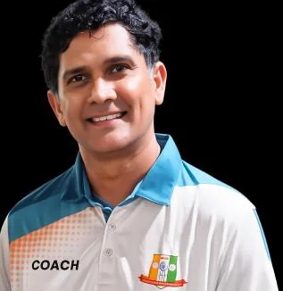
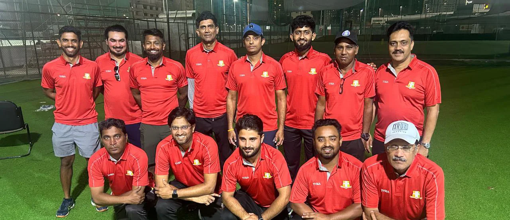

Our coaching is led by a Sri Lanka international and delivered by a 13-strong team of coaches from different nationalities, on the ground every day except Mondays.

Head coachAjith played first-class cricket for Nondescript Cricket Club in Sri Lanka from 1989 to 1996, and represented the Sri Lanka national team at the 1994 Austral-Asia Cup. Before that came the Sri Lanka U24 tour of South Africa in 1993 and the U19 Asia Cup in 1989. He has lived the pathway our players are on.
He has coached in Dubai for over twenty years: a decade as senior coach at Desert Cubs Cricket Academy working with U16 and U19 squads, head-coach roles at Lanka Lions and Danube Lions, and since 2019, head coach here, where he leads the coaching team, designs the development pathway, and still runs specialised bowling sessions himself.
Under his leadership, our U-19 side reached the Emirates Cricket Board semifinals in back-to-back seasons (2024/25 and 2025/26), and academy players have gone on to train ahead of UAE U-19 selection.
Represented Sri Lanka at the Austral-Asia Cup.
Toured South Africa with the national U24 side.
Seven seasons of first-class cricket in Sri Lanka.
Asia Cup squad member.
Leads the coaching team and development pathway. Back-to-back Emirates Cricket Board U-19 semifinals.
A decade coaching U-16 and U-19 squads: technical, tactical, and match preparation.
Behind the head coach is a 13-strong coaching team drawn from different cricketing nationalities, covering batting, pace, spin, fielding, and strength & conditioning. Between them they keep every squad, from Foundation to U19, coached to the same standard, every day except Mondays.

Every coach at Cricketers Academy is subject to ongoing assessment. We review session quality, player progress data, and parent feedback on a rolling basis. Certifications are maintained and updated. We don't carry coaches on reputation alone.
The head coach also runs coach-educator sessions for the team, so the standard that built internationals is the standard your child trains under. If you ever have a concern about your child's coaching experience, the head coach is directly contactable.
Contact the head coach